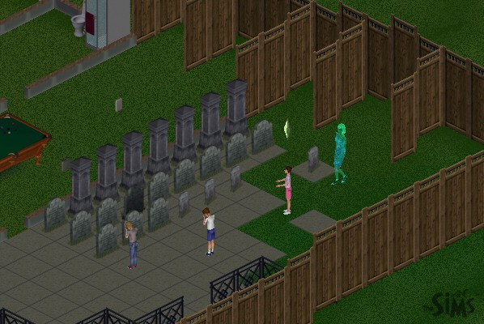
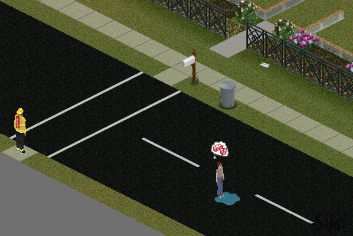
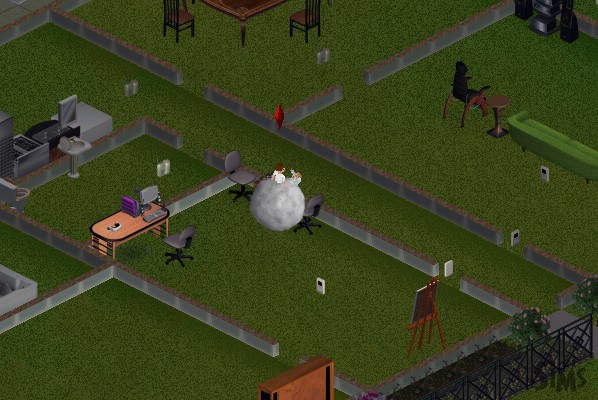
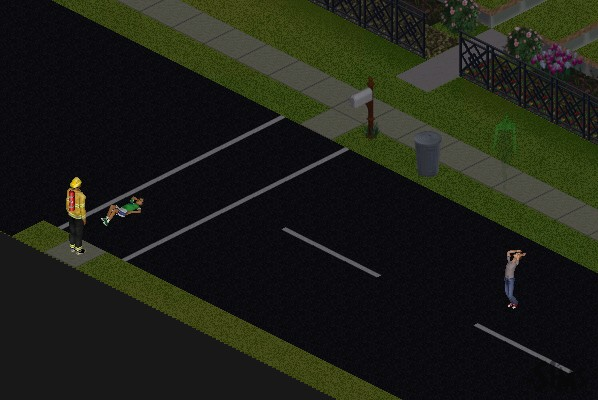
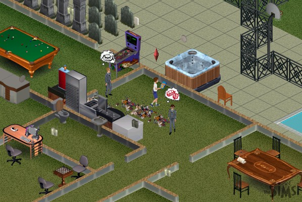
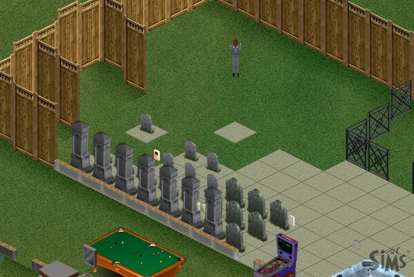

|
The Death of The Sims Part 7: The Hatfield Boys move in!
 |
These sweet, compassionate little boys immediately start mourning the aftermath of the carnage that preceded them, and the ghosts immediately take to scaring them! |
 |
The game physics problems definitely weren't connected directly to Syd, because the fireman is still there, and a neighbor boy tried to come play with the Hatfield's, and got stuck in the web that is the front street. |
 |
In a bad mood because of the ghosts, the boys begin brawling with each other, until they're a bloodied mess. |
 |
Other neighbor kids are also caught in the street's web, and begin to go through the usual death throws. |
 |
Two of the boys are smart and decide to go off to military school rather than be tortured to death by ghosts. No matter how hard I try, I can't stop them from leaving. The third refuses to clean up after himself. |
 |
The final Hatfield realizes he's going to have to go to boarding school to get away from the ghosts, and begins to sob. |
Next Page
darkmage@gmail.com
All images and content are ©2000 Jason L. Snowden or
copyrighted by their respective companies
|